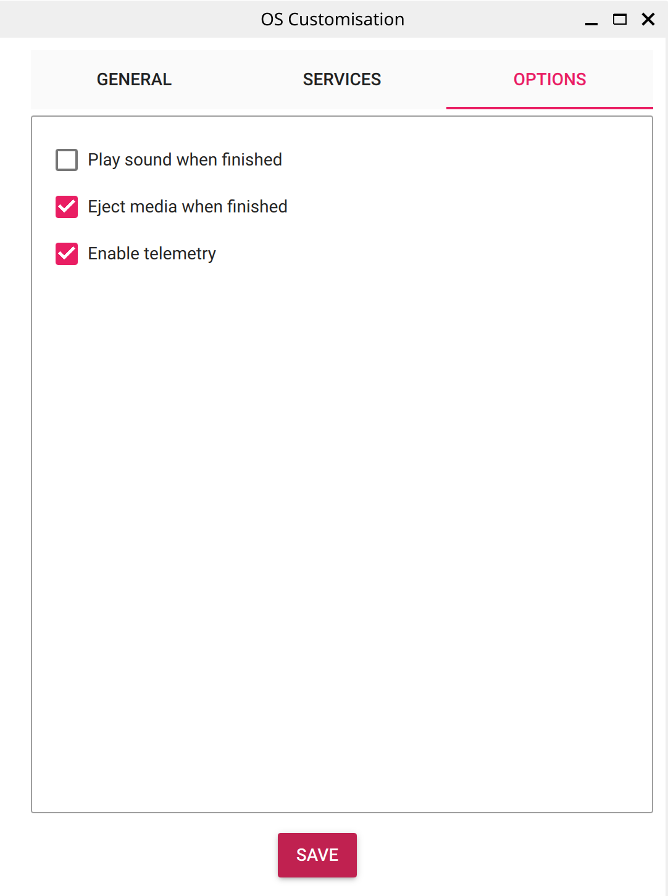

Raspberry Pi, containers & MQTT
Human-IST, ProtoFab, LearningLab, UniFR
ProtoFab assignment 5: Raspberry Pi, containers & MQTT
Introduction
This practical work focuses on learning to set up a raspberry Pi and run docker containers on it. Each task consists of applying some basic (terminal) commands to illustrate usage and then some actions or coding from your side. Note that Task 4 is the only task where you will have to develop on your own!
In this practical work, you will perform the following tasks:
- Task 1 – Configure your raspberry Pi zero W and ssh into it
- Task 2 – Configure an MQTT broker container and test it
- Task 3 – Publish sensor values from arduino to MQTT
- Task 4 – Start multiple containers to store and serve sensor values
- Task 5 – Make docker compose start when booting the raspberry Pi
- Task 6 – [optional] Setup your Raspberry Pi zero W from scratch
Learning objectives:
At the end of the assignment, you should be able to
- Set up a raspberry Pi
- Work with docker-compose
- Test an MQTT broker with standard tools
- Set up a lightweight REST api with Flask
- Understand the linux startup processes and add to it
The aim is to have a web service using MQTT up and running at startup, e.g. when you plug the rasberry Pi W.
Task 1 – Configure your raspberry Pi zero W and ssh into it
Download and setup the image
Download the provided image with docker pre-installed
32 Gb download link 64 Gb download link
These image have been created following step 6 below. As it takes some time, we provide them and you only need to modify a few settings (otherwise we will have 10 Pis with the same hostname on the network). Note that these images have been created with 32 and 64 Gb cards, and may not work on other cards.
username/pwd: protofab
Flash the microSD card through the imager
- Open the imager
- Choose the RasPi zero W device
- select the custom image you downloaded as operating system
- choose the SD card as storage
- click next and no (for not applying the settings) to burn the image on the SD card (it takes time)
Mount the image on your computer: unplug and replug the SD card
Modify the hostname by editting the files [rootfs]/etc/hostname and [rootfs]/etc/hosts. Replace “raspi” with “profab
” (no underscores) such that we can differentiate them easily on the network. Save the files and eject the SD card Plug the SD card on your RasPi and boot. You will find your RasPi using its new hostname
[localpc-terminal] ping profab<robot number><your initials>.local[optional ] Connect to another wifi
- The wifi is configured to connect to the lab’s wifi. If you want to connect to another wifi (e.g. your mobile hotspot), ssh on the RasPi and scan the wifis available using nmcli (network manager CLI)
[pi-terminal] sudo nmcli dev wifi- modify the name and priority of the profab wifi
[pi-terminal] sudo nmcli connection modify preconfigured connection.id ProFab connection.autoconnect-priority 4- connect the RasPi to your mobile hotspot
[pi-terminal] sudo nmcli connection add con-name hotspot type wifi ssid "yourhotspotssid" wifi-sec.key-mgmt wpa-psk wifi-sec.psk "yourhotspotpasswd" connection.autoconnect-priority 5- check that the configuration indeed happened
[pi-terminal] ls -alF /etc/NetworkManager/system-connections/- It will now remember the network and automatically connect to the one available. See this link for additional information.
Boot the RasPi
Put the image on the RasPi and connect it to the power socket. Careful there are 2 mini-USB connectors: one for USB, one for power (PWR). The latter is the right one.
Wait a long time…. 2-3 minutes
log on your RasPi (see below). Check if your RasPi is on the network, using the hostname defined above (make sure your computer is on the ProFab wifi…).
Log onto your RasPi
There are 2 options to ssh on your RasPi
- use the “yourhostname”.local address
- find your RasPi ip (see below)
[localpc-terminal] ssh protofab@yourhostname.localor
[localpc-terminal] ssh protofab@192.168.1.xxxfind your own ip
[localpc-terminal] ip addrfind all devices on your network (change ip as needed)
[localpc-terminal] fping -gaq -r 0 192.168.1.0/24On the profab wifi, 192.168.1.1 is the access point.
On windows the powershell is faster to find the RasPi by hostname.
[localpc-terminal] ping -4 yourhostname.local
Task 2 – Configure an MQTT broker container and test it
Configure and start the MQTT broker
Create a folder for the task, cd into it, and edit the docker-compose.yml file
[pi-terminal] nano docker-compose.ymlHere is the configuration you will use
version: '3.3' services: mqttbroker: hostname: mosquitto image: eclipse-mosquitto:latest restart: always volumes: - ./mqtt_broker/mosquitto.conf:/mosquitto/config/mosquitto.conf - ./mqtt_broker/mosquitto.passwd:/mosquitto/config/mosquitto.passwd - ./mqtt_broker/log/mosquitto.log:/mosquitto/log/mosquitto.log - ./mqtt_broker/data:/mosquitto/data ports: - 1883:1883 privileged: truecreate a “mqtt_broker” folder, cd into it and edit the configuration file (note the commented-out options)
[pi-terminal] nano mosquitto.conf#pid_file /var/run/mosquitto.pid persistence false #persistence_location /mosquitto/data/ #log_dest file /mosquitto/log/mosquitto.log log_dest stdout #password_file /mosquitto/config/mosquitto.passwd allow_anonymous true listener 1883cd back to your task folder and start the docker container
[pi-terminal] docker compose up -d mqttbroker
Test the MQTT broker
install the mosquitto clients on your machine
[localpc-terminal] sudo apt install mosquitto-clientsopen a terminal and subscribe to a test topic
[localpc-terminal] mosquitto_sub -h <yourhostname>.local -p 1883 -t "testtopic"open a second terminal and publish to the same topic
[localpc-terminal] mosquitto_pub -h <yourhostname>.local -p 1883 -t "testtopic" -m "test message"you should see the message appear in the first terminal. This message has been sent to the RasPi MQTT broker which took the care to distribute it to the subscribers. Important: the broker is not secure!
[optional] More secure MQTT broker
Change the MQTT broker configuration to make the broker more secure
Configure username/password with the “mosquitto_passwd” command. This command is in the mosquitto package.
[pi-terminal] sudo apt install mosquittonote that this will by default start a mosquitto server at boot. You will have to disable it using systemd to make sure that the port 1883 does not clash with the container. more info
Use a dedicated self-signed certificate: this certificate will need to be locally available to all clients. more info
Code links
docker compose definition docker-compose.yml
MQTT broker mosquitto.conf
Task 3 – Publish sensor values from arduino to MQTT
Open the arduino IDE
Install the PubSubClient arduino library
Make your arduino MQTT-enabled using the PubSub library. The whole code is available on github and at the end of this document
#include <PubSubClient.h> ... /* Put your MQTT broker credentials */ const char* mqttServer = "yourhostname.local"; // <------ CHANGE HERE const int mqttPort = 1883; const char* mqttTopic = "esp32/lux"; ... WiFiClient wlanClient; PubSubClient client(wlanClient); ... /* MQTT setup */ client.setServer(mqttServer, mqttPort); while (!client.connected()) { Serial.println("Connecting to MQTT..."); //if (client.connect("ESP32Client", mqttUser, mqttPassword )) { if (client.connect("ESP32Client")) { Serial.println("connected"); } else { Serial.print("failed with state "); Serial.println(client.state()); delay(2000); } } ... char currentValue[10]; void loop(void){ ... if (millis()%2000 < 10) { float luxValue = veml.readLux(VEML_LUX_AUTO); dtostrf(luxValue, 2, 2, currentValue); Serial.print("reading lux sensor: "); Serial.println(currentValue); client.publish(mqttTopic, currentValue); LEDstatus = !LEDstatus; } }compile and flash your code on the arduino, reset it.
Start a terminal on your computer and subscribe to the “esp32/lux” topic.
[localpc-terminal] mosquitto_sub -h yourhostname.local -p 1883 -t "esp32/lux"
[optional] Further work
Add username and password to your arduino publisher. more info
Do some “edge computing” on your arduino by computing simple statistics of the sensor values, and publish them on different MQTT topics
Code link
- ESP32 arduino code
Task 4 – Start multiple containers to store and serve sensor values
Copy the files: Get the files from github, unzip it on your machine, and copy them from your local folder to your pi using scp (address name example)
[localpc-terminal] scp -r ./data* docker* mqtt* protofab@<yourhostname>.local:/home/protofab/or
[localpc-terminal] scp -r ./data* docker* mqtt* protofab@192.168.1.xxx:/home/protofab/- Here is the file structure of the whole project after it has run once (creating the mosquitto logs).
Example containerization file structure Data recorder: Open the file data_recorder.py and change the MQTT borker ip address to point to your pi. Use only the ip version as localhost raises a CORS error in the browser.
[pi-terminal] nano data_recorder/data_recorder.pymqttServer = "192.168.1.xxx" # <------ CHANGE HERE mqttPort = 1883 #mqttUser = "mqttuser"; #mqttPassword = "password"; mqttTopic = "esp32/lux"- study the function on_messsage(): it mainly stores incoming data into a .csv file
def on_message(client, userdata, msg): lux = str(msg.payload.decode("utf-8")) timestr = time.strftime("%Y_%m_%d-%H_%M_%S") columns = ["datetime", "lux"] # store values FILE_PATH = Path('data/illuminance.csv') if not FILE_PATH.exists(): with open(FILE_PATH, 'w', newline='') as csv_file: csv_file_writer = csv.writer(csv_file) csv_file_writer.writerow(columns) with open(FILE_PATH, 'a', newline='') as csv_file: csv_file_append = csv.writer(csv_file) csv_file_append.writerow([timestr,lux]) # save current value FILE_PATH = Path('data/current') with open(FILE_PATH, 'w', newline='') as current: current.write(lux)- This python file uses the paho-mqtt library. The library needs to be installed when building the docker image (data_recorder/Dockerfile):
#FROM python:3 FROM arm32v6/python:3.9.14-alpine3.15 WORKDIR /usr/src/app RUN mkdir data RUN pip install --no-cache-dir paho-mqtt COPY . . CMD [ "python", "./data_recorder.py" ]- Note in the docker file the working and data directories that match with the docker-compose.yml file
data_recorder: build: data_recorder image: profab_recorder:latest environment: - TZ=Europe/Berlin restart: always network_mode: host volumes: - data_volume:/usr/src/app/dataSimple flask server Open the file data_server.py.
- It defines 3 routes: index, analysis and current. The first two return a template, while the third is used in the index.html to provide the current data value.
@app.route('/analysis') def analysis_page(): """Analysis page.""" m,s,mi,ma = analyze_lux_data() return render_template('analysis.html', values = [m,s,mi,ma]) @app.route('/') def index(): """current lux reading page""" return render_template('index.html') @app.route('/current') def current(): current = 'none' with open('data/current') as f: current = f.readline() response = make_response(current, 200) response.mimetype = "text/plain" response.headers.add('Access-Control-Allow-Origin', '*') return response @app.route('/lastreading') def lastreading(): return time.ctime(os.path.getmtime('data/illuminance.csv'))- The function analyze_lux_data() is a simple computation example. The use of pandas on the RasPi Zero requires a non-trivial installation process.
def analyze_lux_data() : """simple data analysis without pandas""" _min = 1000000.0 _max = -1.0 with open('data/illuminance.csv') as csv_file: csv_reader = csv.reader(csv_file, delimiter=',') tmp = [] for row in csv_reader: if row[1]=='lux': continue tmp.append(float(row[1])) _mean = sum(tmp) / len(tmp) # mean var = sum(pow(x-_mean,2) for x in tmp) / len(tmp) # variance _std = math.sqrt(var) # standard deviation _max = max(tmp) _min = min(tmp) return _mean,_std,_min,_max- Again the library (here flask) needs to be installed and a port exposed (5000) (data_server/Dockerfile):
#FROM python:3 FROM arm32v6/python:3.9.14-alpine3.15 WORKDIR /usr/src/app RUN mkdir data RUN pip install --no-cache-dir Flask COPY . . EXPOSE 5000 CMD [ "python", "data_server.py" ]- Note in the docker file the same working and data directories than for the data recorder. This path is shared in the docker-compose file for the exchange of data
data_server: build: data_server image: profab_server:latest environment: - TZ=Europe/Berlin restart: always network_mode: host ports: - "5000:5000" volumes: - data_volume:/usr/src/app/data- The index.html template uses the “current” route to retrieve the last value published. Change the ip as needed. (data_server/templates/index.html)
<h1> <span id="luxValue">0</span> [lux]</h1><br> ... <h1> <span id="timestamp">xx</span> </h1><br> ... <script> setInterval(function() { // Call a function repeatedly with 2 seconds interval getData('current','luxValue'); getData('lastreading','timestamp'); }, 2000); //2000mSeconds update rate function getData(route,id) { var xhttp = new XMLHttpRequest(); xhttp.onreadystatechange = function() { if (this.readyState == 4 && this.status == 200) { document.getElementById(id).innerHTML = this.responseText; } }; xhttp.open("GET", "http://192.168.1.xxx:5000/"+route, true); <!------ CHANGE HERE --> xhttp.send(); } </script>- The analysis.html template uses jinja templating to display the analysis values
m,s,mi,ma = analyze_lux_data() return render_template('analysis.html', values = [m,s,mi,ma])<div> <h3>ESP32-S3 VEML7700 lux sensor statistics</h3><br> <h1>Illuminance</h1> <h1>Mean</h1> <h1> {{ values[0] }} [lux]</h1><br> <h1>STD</h1> <h1> {{ values[1] }} [lux]</h1><br> <h1>Min</h1> <h1> {{ values[2] }} [lux]</h1><br> <h1>Max</h1> <h1> {{ values[3] }} [lux]</h1><br> <br/> </div>Run the whole system: Start the whole infrastructure - except the arduino, building the images if needed (the build takes ~9’ on the RasPi zero W)
[pi-terminal] docker compose up --buildWhen the MQTT server is up and running, reset your esp32 to make sure it is connected to the MQTT broker
With a browser on your computer, connect to http://yourhostname.local:5000 or http://yourhostname.local:5000/analysis, or http://192.168.1.xxx:5000 or http://192.168.1.xxx:5000/analysis to get a response from the server (running in a container)
Stop all containers and remove shared volumes (this removes previously recorded data)
[pi-terminal] docker compose down -v- If you only want to run the data_recorder container (e.g. for debug)
[pi-terminal] docker compose up --build data_recorder- If you experience an error when running the docker-compose, typically saying “port 1883 already in use”, this is due to the previous MQTT container of Task 2 using the port. You can check this with the command
[pi-terminal] sudo ss -lptn 'sport = :1883'In this case you just need to stop the container (be careful to be in the right folder to use the right docker-compose.yml).
[pi-terminal] docker compose down -vIf you installed docker on the pi, this error might also be due to the system docker deamon being started. In this case you need to use systemctl to stop it.
[pi-terminal] sudo systemctl stop docker.service- Once everything works fine you may use the command below to start the whole infrastructure in one go.
[pi-terminal] docker compose up -d --build
[optional] Further work
Move the simple statistics of data_server.py to the arduino (on a limited time window), publish them on new topics, and include this information on the index.html template.
Include a shared network and hostnames in the docker-compose.yml file to avoid the need to change the ip addresses
Code links
python flask server: data_server.py
python flask server: Dockerfile
python flask server: templates/index.html
python flask server: templates/index.html
python data recorder: data_recorder.py
python data recorder: Dockerfile
Task 5 – Make docker compose start when booting the raspberry Pi
in your working directory of Task 4, modify the line of the systemd service file to point to your docker-compose.yml directory
# /etc/systemd/system/docker_compose_app.service [Unit] Description=Docker Compose Application Service Requires=docker.service After=docker.service [Service] Type=oneshot RemainAfterExit=yes WorkingDirectory=/home/protofab/ ExecStart=/usr/local/bin/docker compose up -d --build ExecStop=/usr/local/bin/docker compose down -v TimeoutStartSec=0 [Install] WantedBy=multi-user.target- copy the systemd service file to the systemd folder
[pi-terminal] sudo cp ./docker_compose_app.service /etc/systemd/system/docker_compose_app.service- enable the service
[pi-terminal] sudo systemctl daemon-reload [pi-terminal] sudo systemctl enable docker_compose_app- you may want to disable it at some point
[pi-terminal] sudo systemctl disable docker_compose_app- check if the service is running properly
[pi-terminal] systemctl status docker_compose_app.service [pi-terminal] sudo systemctl list-unit-files | grep docker_compose_app [pi-terminal] sudo systemctl restart docker_compose_app.service- reboot your RasPi (wait….), and with a browser on your computer connect to http://yourhostname.local:5000 or http://yourhostname.local:5000/analysis, or http://192.168.1.xxx:5000 or http://192.168.1.xxx:5000/analysis to get a response from the server.
You should have now a complete system running at startup an MQTT server with several services to check data publishing and recording.
Task 6 – [optional] Setup your Raspberry Pi zero W from scratch
Flash the microSD card: Raspberry Pi provides Raspberry Pi OS (former raspbian) - a tailor-made linux distribution for each kind of raspberry pi
Start by downloading the raspberry Pi imager and install it on your computer
Open the imager:
- choose the RasPi type: “raspberry pi zero W”
- important select the right OS version: raspberry Pi OS (other) \rightarrow raspberry Pi OS lite (legacy,32-bit). We use the previous version (buster) since docker is no longer supported on RasPis zero W.
- introduce the microSD or the microSD adpater on your computer, choose the corresponding storage (make sure it is really the SD card, since everything will be overwritten)
You should obtain the following image
Raspberry Pi imager settings - Press “NEXT” and “EDIT SETTINGS” to configure the OS: set up (a unique) hostname, locale, ssh username & password, and wifi (ssid:“ProFab”, password:“1700_UniFR.&”). Change the wifi credentials if you are not in the LearningLab

- Save the settings, and choose “Yes” to apply them. Then flash the image on the SD card (this will overwrite any data on it)
Boot the RasPi and log on
Put the image on the RasPi and connect it to the power socket. Careful there are 2 mini-USB connectors: one for USB, one for power (PWR). The latter is the right one.
Wait a long time…. 2-3 minutes
Check if your RasPi is on the network (see Task 1), using the hostname or fping (make sure your computer is on the ProFab wifi…).
Log onto your raspi with ssh using the username & password provided during configuration
you have now an up-and-running RasPi with linux!
update your software when you have something else to do as this may take some time (20-30 minutes depending on how many security updates there has been since the image release). The RasPI Zero is a low performance computer…
[pi-terminal] sudo apt update [pi-terminal] sudo apt upgradeInstall docker
- ssh into your pi and install docker by getting the install script and running it
[pi-terminal] sudo curl -sL https://get.docker.com | bash- add the current user to the docker group, and check if it is set
[pi-terminal] sudo usermod -aG docker ${USER} [pi-terminal] groups ${USER}- reboot and check docker
[pi-terminal] docker version [pi-terminal] docker info [pi-terminal] docker run --rm hello-world- docker-compose is installed with docker. test it with
[pi-terminal] docker compose versionmake an image of your RasPi
Power down the pi, remove the SD card and plug it in back to your computer
If you are on linux (or mac), identify the SD card using
[localpc-terminal] lsblkor
[localpc-terminal] dfThe card should have the form /media/user/sda or sdb
- Backup your pi system using (in this case your SD card is sda)
sudo dd if=/dev/sda status=progress conv=fsync bs=4M | gzip > /home/<user>/protofab_pi_backup.gzCompressing is needed to avoid huge files, also the system is fresh and should not take much space on the card. If you are on another platform see this link.
You can the use the imager to burn a clone of your system on another SD card with the “Use custom” option.
Contact information
- Dr. Simon Ruffieux, simon.ruffieux@unifr.ch
- Dr. Julien Nembrini, julien.nembrini@unifr.ch